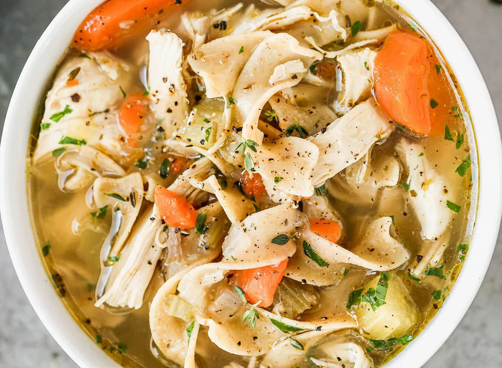

Chicken Noodle Soup

Ingredients
- Oil
- Onion
- Celery
- Carrot
- Wide Egg Noodles
- Shredded Chicken
- Chicken skin
- Seasoning (Onion powder, Paprika, Oregano, Italian seasoning, Cajun)
- Chicken Broth
- Garlic
Steps
- Add oil to a pot
- Boil wide egg noodles in a seprate pot
- Add 2 part onion to 1 part celery to 1 part carrot
- Add chicken skin
- Add garlic once vegtables are done
- Add shredded chicken
- Season with onion powder, paprika, oregano, italian seasoning and a bit of cajun
- Add Chicken Broth
- Serve with wide egg noddles